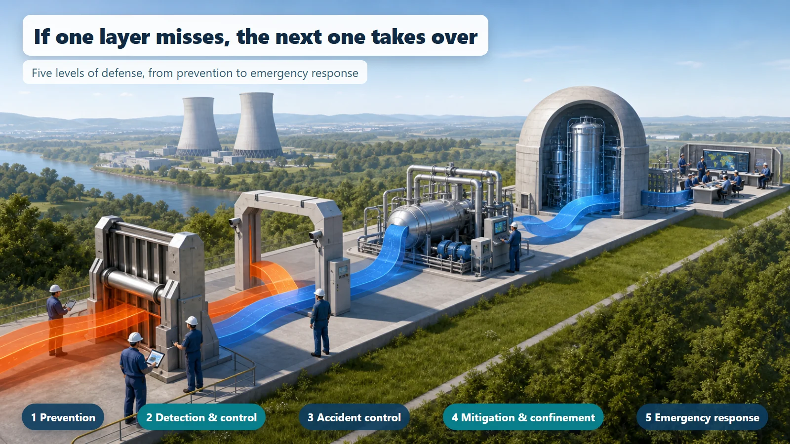
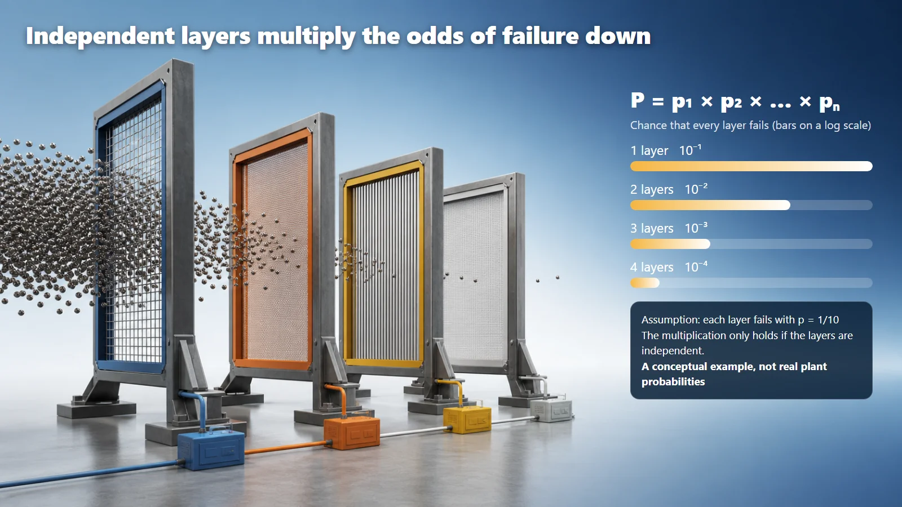

Safety Principles & Accident Analysis · 202
A Home That Doesn't Trust One Fire Extinguisher — Defense in Depth, the Layers That Guard a Nuclear Plant
No single barrier is perfect, so nuclear plants overlap several imperfect ones. The trick is keeping them independent, so one cause can't knock them all down.
Defense in depth means never entrusting safety to a single perfect device, but stacking several independent layers of defense so that if one layer is breached, the next one takes over. It combines five defense levels, from prevention to off-site emergency response, with several physical barriers, and its real strength comes from keeping those layers independent. [1]
You're frying something in the kitchen, the oil starts to sizzle, and a wisp of smoke curls up from the pan. You switch on the range hood. Look around and your home has more gear for this moment than you might think: a smoke alarm on the ceiling, an extinguisher under the sink, an automatic gas shut-off, an evacuation map by the door. Why so many layers? That idea, "never rely on just one thing," is the same thinking that underlies nuclear power plant safety.
Not "one strong wall" but "layer upon layer"
The most common misunderstanding is that defense in depth means one very thick, very strong wall. It is closer to the opposite. It starts by admitting up front that no barrier is 100% perfect. So instead of straining to build one perfect thing, you overlap several imperfect ones, just as a home spreads the job across an alarm, an extinguisher, a fire door and an escape route.
Five layers, seen through a kitchen fire
| Level | In the kitchen | In a nuclear plant |
|---|---|---|
| 1 Prevention | Watch the oil, don't leave the stove | Conservative design, high-quality construction and operation |
| 2 Detection and control | The smoke alarm warns early | Catch abnormal signs early and control them before they become an accident |
| 3 Accident control | Use the extinguisher | Safety systems shut the reactor down and inject emergency cooling |
| 4 Mitigation and confinement | Close the fire door to keep it in one room | Contain radioactive material and mitigate the accident's progress |
| 5 Emergency response | Get out and call the fire department | Off-site emergency response plans |
The five-level structure is used internationally, though its exact wording and subdivision differ between documents and regulatory systems. [1] [2]

The "many layers" are not only these defense levels. The barriers that physically hold radioactive material in are layered too: the fuel pellet itself holds on to fission products, the metal cladding blocks them again, the thick pressure boundary (reactor vessel and piping) blocks them once more, and the huge containment building wraps around everything. Defense in depth covers both levels and barriers together.
The real secret: the layers work apart
Having several layers isn't enough; they must be independent. If a power cut knocks out the smoke alarm, the range hood and the fire-suppression gear all at once, no number of layers helps. When a single cause brings down several layers at the same time, it is called a common cause failure.
So plants design their layers around three principles: redundancy (more than one of the same function), diversity (different working principles, for example an electric pump and a steam-driven pump) and independence (separate power supplies and locations).
Probability shows why independence matters. The chance that independent layers all fail is the product of their individual chances, P = p₁ × p₂ × … × pₙ. If one layer fails one time in ten, two independent layers fail one time in a hundred, three layers one time in a thousand. But this holds only when the layers truly work apart; if they all fall to the same cause, the benefit disappears.

One more misunderstanding
Having this many layers does not mean an accident is absolutely impossible. Defense in depth greatly reduces the likelihood and impact of accidents; it is not an absolute guarantee that risk is zero. Nor should the need for several layers be read as "so it must be dangerous." It is a careful way of thinking: there is no perfect single thing, so overlap several imperfect ones independently.
Today's takeaways
- Defense in depth is not one strong wall but layers of independent defense: prevention, detection, cooling, confinement and response.
- It starts from the premise that no barrier is perfect, so the next layer takes over when one is breached.
- Independence is the source of strength: independent layers multiply the chance of total failure down, while a common cause wipes out that benefit.
- Redundancy, diversity and independence keep the layers from collapsing all at once.
- Defense in depth is not magic that eliminates accidents; it cuts their likelihood and impact layer by layer.